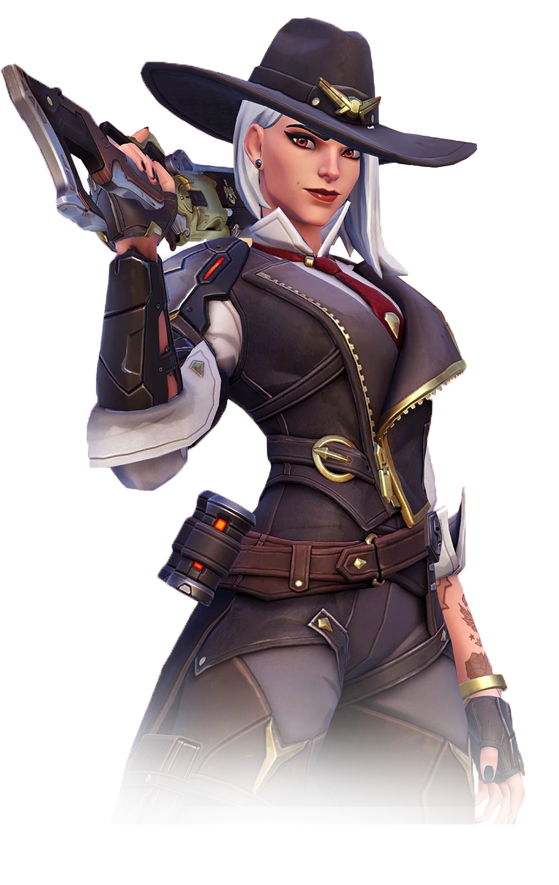

Runs at you and fights close range. Strengths - hard to have people isolated and
picked off on your team- very easy to position well in a brawl comp. Dominates
close range/indoors maps, kings row/Nepal are good examples. Weaknesses -
struggles against high ground(instant loss on maps like numbani and Gibraltar
in high ranks). Struggles against range. A lot of the time will rely on a really
good lucio player who knows how to properly manage speed boost and amp, which
in ladder is rare.
Poke

Poke - sits as far away as possible. Aim of the comp is basically to kill the
enemy before they reach you/win fights before they even happen. Strengths -
Dominates sniper maps and maps with very long sight lines, think of Circuit
Royale, Havana. Efficient at generating ult charge. Very good at locking down
areas/angles. Weaknesses- Crumbles in close range fights and maps that have
short angles. Can struggle on attack on certain maps, specifically high ground
maps, although it becomes a little stronger on Defense. Ana is a very bad support
with spam and good luck not having an Ana on your teams in ladder.
Dive
Dive - This is the comp used for mobility and extremely importantly verticality.
Essentially using mobility and map geometry as a weapon against less mobile comps.
Strengths - BEST COMP TO CONEST AND CONTROL HIGHGROUND! - if you want literally
free wins up until around masters, play dive on maps like numbani, Gibraltar,
Hollywood and hard focus anyone who even goes near the high ground. Controlling
high ground is key in this game and dive excels at it. Ability to punish poor
positioning very effectively. Can be hard to pin down and force fights, usually
dive has a lot of control over when and where fights happen. Weaknesses - Can be
a very complicated comp to play, usually very high skill heroes + high team
coordination required or just fails. Struggles on maps where mobility cannot be
used against the enemy team. Think of kings row second point, where there are
heaps of tiny angles that allows for brawl to dominate dives. Can sometimes be
literally impossible to kill anything, playing against brig/kiriko/lucio comps
can be very hard for dive for instance.
Metas
A generally accepted strategy that the community considers to be the best way to win
or perform a specific task.